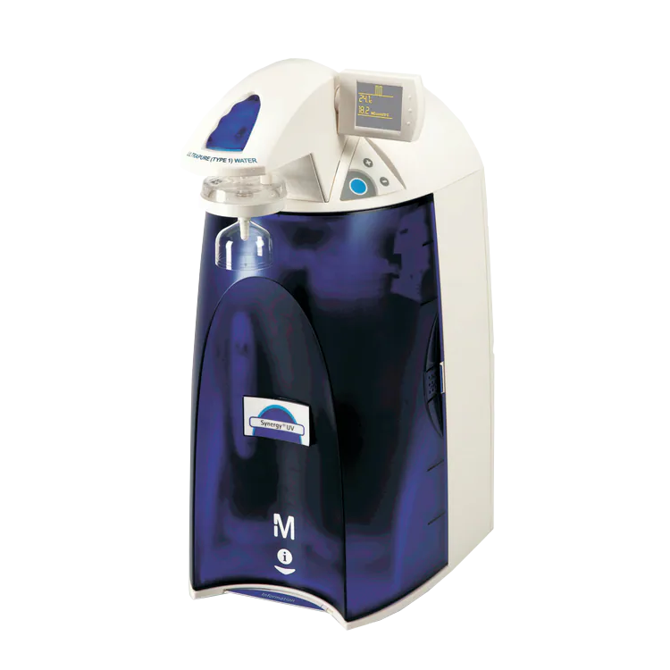

MilliporeSigma Synergy Ultrapure Water System

| MilliporeSigma Synergy Ultrapure Water System | |
|---|---|
| Location: | Room 2.5 Building 7 |
| Manager: | Margarida RamiresRodrigo Borges |
| Operator: | User |
| Working Principle: | Water Purification |
| Manufacturer: | Merck KGaA |
| Model: | Synergy |
| Type: | Ultrapure Water System |
| Website: | Fisher Scientific |
Millipore Synergy ultrasensitive water purification system, designed for the production of ultrapure water of Type I from previously treated water, intended for laboratory and research applications that require high chemical and microbiological purity. The system produces water with resistivity of up to 18.2 MΩ·cm at 25 °C, suitable for solution preparation, reagents, culture media and other high-demand analytical and laboratory applications.
The equipment uses a purification and final polishing system based on SynergyPak cartridges and can be configured with final membrane filtration or ultrafiltration. The Synergy UV version additionally incorporates a 185/254 nm UV lamp, allowing the total organic carbon (TOC) content to be reduced to below 5 ppb.
Main Applications
- Water Purification;
Technical Specifications:
| Specification | Value |
|---|---|
| Manufacturer | Merck KGaA |
| Model | Synergy |
| Produced Water Type | Type I |
| Resistivity | 18.2 MΩ·cm @ 25 °C |
| TOC | < 10 ppb |
| Particles >0.22 μm | < 1 particle/mL* |
| Bacteria | < 0.1 CFU/mL* |
| Instantaneous Flow Rate | > 1.5 L/min |